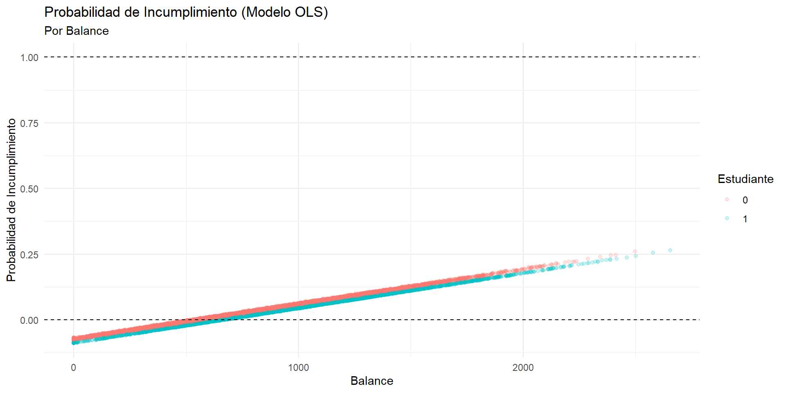
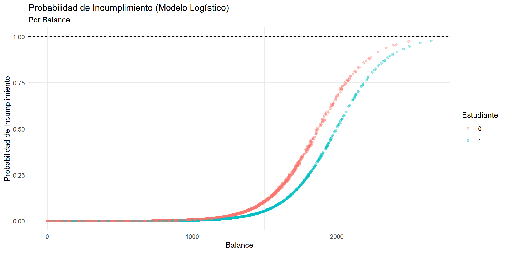
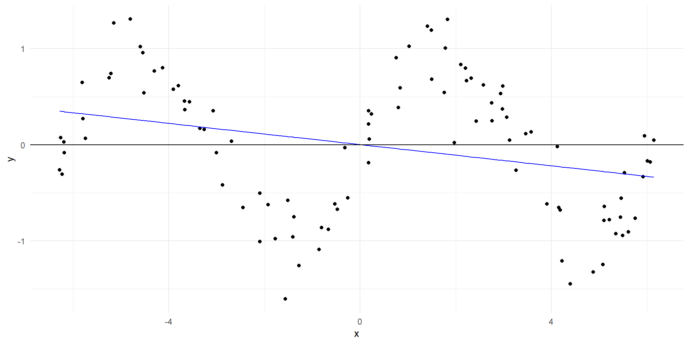
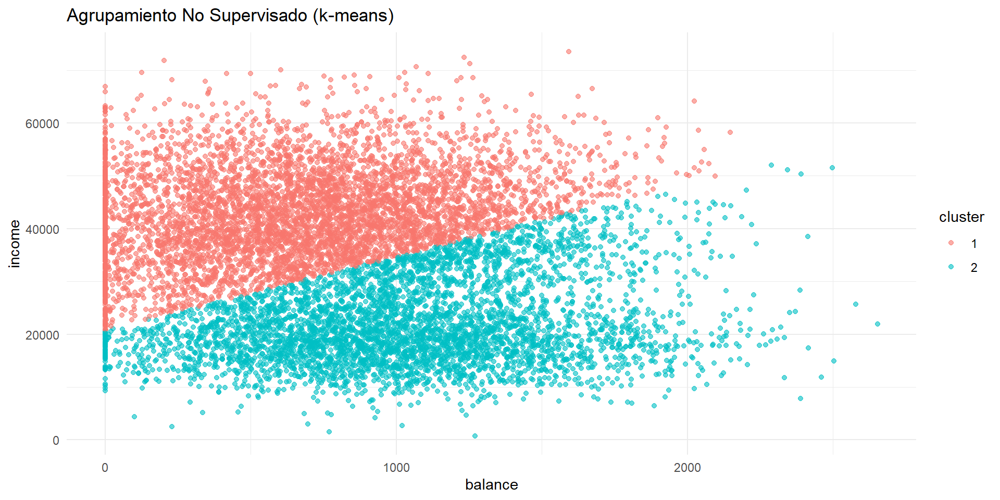
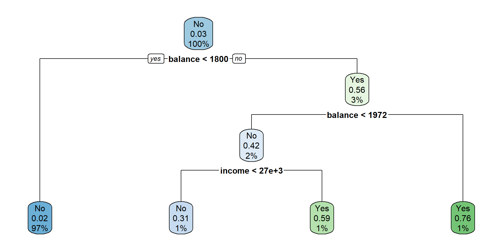
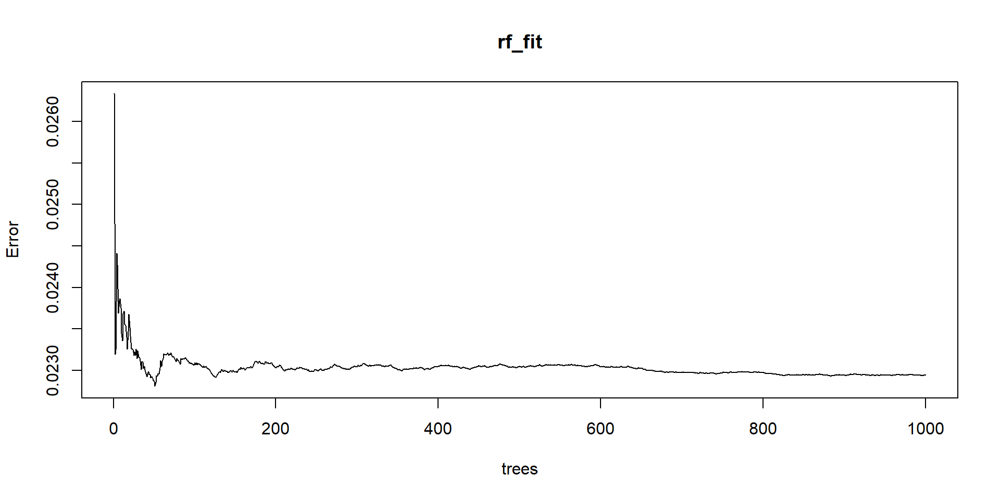
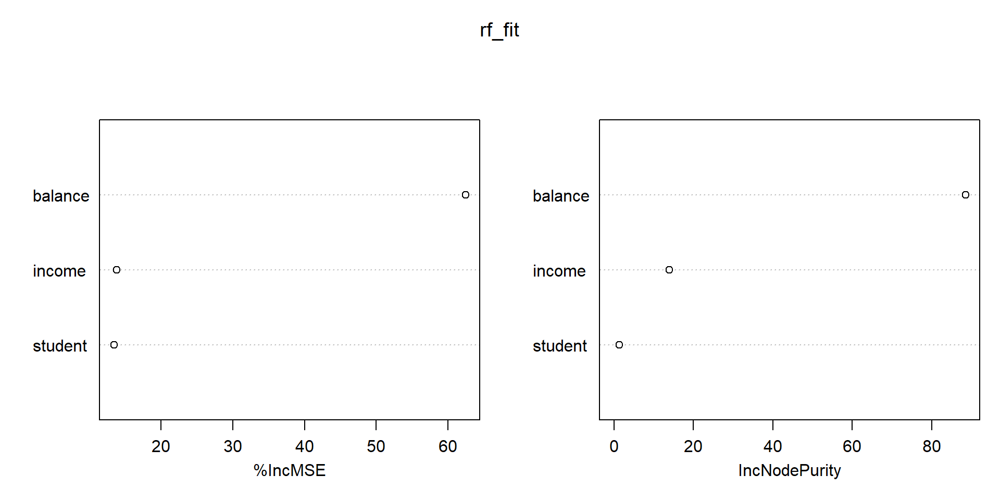
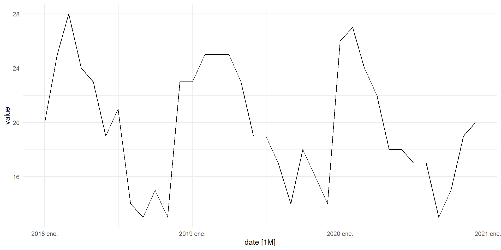
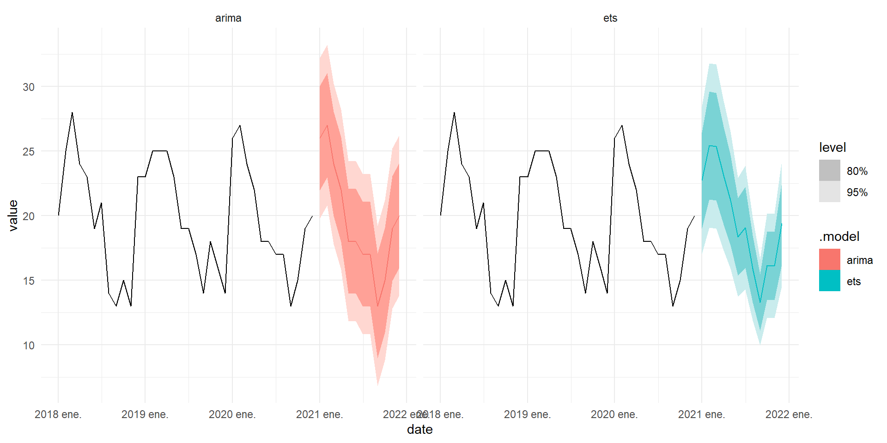

Clase 4
2 de abril de 2025
En clases anteriores, vimos cómo hacer inferencia sobre algunas relaciones entre variables.
Respondimos preguntas como:
¿Qué relación lineal guardan los ingresos de las personas dependiendo de su educación?
¿Cuál es el efecto causal del género de una candidatura sobre su probabilidad de promoción?
¿Podemos estar seguros de que estas relaciones son estadísticamente significativas?
En esta clase, usaremos herramientas estadísticas para responder preguntas relacionadas con predicción, clasificación y pronóstico.
¿Qué probabilidad tiene una persona en particular de incumplir su deuda, dependiendo sus características observables?
Cómo puedo clasificar a una persona en grupos de riesgo (alto o bajo) de incumplimiento?
¿Cuántas personas incumplirán su deuda durante los próximos meses?
Cuando usamos OLS para hacer inferencia, nos interesaba la relación entre dos variables.
En tareas de predicción supervisada, seguiremos utilizando herramientas estadísticas del tipo \(Y = f(X) + \epsilon\), pero cambiaremos el lenguaje que usamos para describir el problema.
Vamos a usar el conjunto de datos Default del paquete ISLR.
Este conjunto de datos contiene información sobre personas deudoras de tarjeta de crédito, si han incumplido o no su deuda y algunas características individuales.
Igual que en la Clase 3, podemos ajustar un modelo de OLS para:
Estudiar la relación lineal entre las características de los individuos y su probabilidad de incumplimiento, y
Predecir la probabilidad de incumplimiento de un individuo en particular.
Respondamos la primera pregunta: cómo afecta cada una de las variables a la probabilidad de incumplimiento.
Para esto, ajustamos un modelo de probabilidad lineal por cada una de las variables independientes:
pacman::p_load(fixest)
Default <- Default |>
mutate(
default = as.numeric(default == "Yes"),
student = as.numeric(student == "Yes")
)
Default |>
feols(
default ~ sw(balance, income, student)
) |>
etable(
title = "Modelo de probabilidad lineal",
fitstat = ~ n + r2 + my + f,
markdown = T,
digits = 3
)Pregunta: ¿Cómo interpretamos los resultados?
Para modelar la probabilidad de incumplimiento con OLS, usamos la siguiente especificación:
\[ D_i = \beta_0 + \beta_1 balance_i + \beta_2 income_i + \beta_3 student_i + \epsilon_i \qquad(1)\]
Donde:
\(D_i\) es la variable dependiente que indica si el individuo \(i\) incumplió su deuda (1) o no (0).
\(balance_i\) es el balance de la tarjeta de crédito del individuo \(i\).
\(income_i\) es el ingreso del individuo \(i\).
\(student_i\) es una variable dummy que indica si el individuo \(i\) es estudiante (1) o no (0).
\(\epsilon_i\) es el término de error.
De nuevo, el modelo descrito en la Ecuación 1 es un modelo de probabilidad lineal porque su variable dependiente es binaria.
Estimamos el modelo de probabilidad lineal usando OLS como lo hemos hecho antes:
OLS estimation, Dep. Var.: default
Observations: 10,000
Standard-errors: IID
Estimate Std. Error t value Pr(>|t|)
(Intercept) -0.081179487 0.008382077 -9.68489 < 2.2e-16 ***
balance 0.000132690 0.000003547 37.41200 < 2.2e-16 ***
income 0.000000199 0.000000192 1.03873 0.29896
student -0.010330101 0.005663178 -1.82408 0.06817 .
---
Signif. codes: 0 '***' 0.001 '**' 0.01 '*' 0.05 '.' 0.1 ' ' 1
RMSE: 0.167925 Adj. R2: 0.123756Aquí, no nos interesa la interpretación de los coeficientes, porque la tarea es predecir la probabilidad de incumplimiento de un individuo en particular.
Con el modelo que estimamos, ols_fit, podemos responder la siguiente pregunta:
Ejemplo 1 ¿Cuál es la probabilidad de incumplimiento de un individuo con balance de $1000, ingreso de $50000 y que no es estudiante?
[1] 0.06146788Una persona con balance de $1,000, ingreso de $50,000 y que no es estudiante tiene una probabilidad de incumplimiento de 6.15%.
Ejemplo 2 ¿Cuál es la probabilidad de incumplimiento de un individuo con balance de $100000, ingreso de $500 y que es estudiante?
[1] 13.17756Una persona con balance de $100,000, ingreso de $500 y que es estudiante tiene una probabilidad de incumplimiento de 1 317.76%.
Pregunta: ¿Qué problema tiene esta predicción?
Recordemos que OLS ajusta un plano a los datos. Esto nos va a dar dos problemas para modelar probabilidades:
Predicciones fuera del rango [0, 1]: Al extrapolar, OLS puede predecir probabilidades negativas o mayores a 1.
Relación lineal: OLS asume que la relación entre las variables es lineal. En la realidad podemos encontrarnos con relaciones no lineales.
Default |>
mutate(prob_default = predict(ols_fit)) |>
ggplot(aes(x = balance, y = prob_default, color = as.factor(student))) +
geom_point(alpha = 0.2) +
geom_hline(yintercept = c(0, 1), linetype = "dashed") +
labs(
title = "Probabilidad de Incumplimiento (Modelo OLS)",
subtitle = "Por Balance",
x = "Balance",
y = "Probabilidad de Incumplimiento",
color = "Estudiante"
)
El modelo logístico o logit, viene de una familia de modelos llamados estimadores de máxima verosimilitud.
Análogamente a OLS, que busca minimizar el error de estimación, un modelo de máxima verosimilitud (ML por sus siglas en inglés) busca encontrar los parámetros que maximizan la probabilidad de observar los datos.
A diferencia de OLS, un ML permite incluir variables independientes que no son lineales.
Para modelar una probabilidad, limitamos la estimación a un rango entre 0 y 1 con una función logística con regresores lineales.
Buscamos estimar el siguiente modelo:
\[ D_i = X_i' \beta + \epsilon_i \]
Donde el término \(X_i' \beta\) es la combinación lineal de las variables independientes con sus coeficientes.
La función que acota la probabilidad entre 0 y 1 es la función logística:
\[ \mathbb P (D_i = 1 | X_i) = \Phi(X_i' \beta) = \frac{\exp(X_i' \beta)}{1 + \exp(X_i' \beta)} \qquad(2)\]
La Ecuación 2 nos permite tomar los coeficientes estimados para predecir la probabilidad de incumplimiento de un individuo, acotada entre 0 y 1.
Call:
glm(formula = default ~ ., family = binomial, data = Default)
Coefficients:
Estimate Std. Error z value Pr(>|z|)
(Intercept) -1.087e+01 4.923e-01 -22.080 < 2e-16 ***
student -6.468e-01 2.363e-01 -2.738 0.00619 **
balance 5.737e-03 2.319e-04 24.738 < 2e-16 ***
income 3.033e-06 8.203e-06 0.370 0.71152
---
Signif. codes: 0 '***' 0.001 '**' 0.01 '*' 0.05 '.' 0.1 ' ' 1
(Dispersion parameter for binomial family taken to be 1)
Null deviance: 2920.6 on 9999 degrees of freedom
Residual deviance: 1571.5 on 9996 degrees of freedom
AIC: 1579.5
Number of Fisher Scoring iterations: 8Usamos la notación y ~ . para indicar que queremos usar todas las variables, además de y como predictores.
stats::glm() es la función de base R para estimar modelos de máxima verosimilitud.
family = binomial indica que queremos estimar un modelo logístico: que clasificaremos a los datos en dos grupos de manera supervisada.
Default |>
mutate(prob_default = predict(logit_model, type = "response")) |>
ggplot(aes(x = balance, y = prob_default, color = factor(student))) +
geom_hline(yintercept = c(0, 1), linetype = "dashed") +
geom_point(alpha = 0.3) +
labs(
title = "Probabilidad de Incumplimiento (Modelo Logístico)",
subtitle = "Por Balance",
x = "Balance",
y = "Probabilidad de Incumplimiento",
color = "Estudiante"
)
Para resolver los ejercicios de predicción anteriores, simplemente repetimos el procedimiento que usamos con OLS.
1 2
0.006821253 1.000000000 Encontramos que las probabilidades de incumplimiento son 0.68%, 100.00% respectivamente.
Podemos usar el modelo logístico para clasificar a los individuos en grupos de riesgo.
Definimos un umbral de probabilidad, por ejemplo 0.5.
Si la probabilidad de incumplimiento es mayor a 0.5, clasificamos al individuo como de alto riesgo.
Podemos evaluar la precisión del modelo (supervisado) revisando si la predicción por grupo de riesgo coincide con el estado real de incumplimiento.
Usamos la matriz de confusión para evaluar la clasificación.
Mediremos con qué frecuencia nuestro modelo clasifica correctamente a los individuos, dependiendo de su estado real de incumplimiento.
El modelo logístico clasifica muy bien a las personas que no incumplen su deuda, pero no clasifica bien a las personas que sí incumplen.
A pesar de que las probabilidades de incumplimiento están acotadas entre 0 y 1, el modelo logístico todavía está limitado por el supuesto de linealidad entre predictores y respuesta.

Vemos que en la medida en la que aumentamos el orden del polinomio, el modelo se ajusta mejor a los datos de entrenamiento.
Pregunta: ¿Un mejor ajuste siempre es mejor?
Podemos tener un modelo muy complejo que se ajusta perfectamente a los datos, i.e. con un sesgo muy bajo.
Sin embargo, al ajustarse tan bien a los datos dentro de la muestra de entrenamiento, el modelo empieza a reflejar una varianza que es idiosincrática del conjunto de entrenamiento.
Esta varianza no se reproduce en la muestra de prueba y, por lo tanto, el modelo no generaliza bien la relación funcional entre las variables.
Al dividir nuestro conjunto en dos partes, uno de entrenamiento y otro de prueba, podemos ver que el error en la muestra de prueba tiene forma de U.
Agregar complejidad al modelo reduce el error en el conjunto de prueba, solo hasta cierto punto.
Una vez que llegamos a un cierto nivel de complejidad, el error en la muestra de prueba empieza a aumentar.
Los métodos automatizados de aprendizaje supervisado, como el random forest, encuentran el punto donde el error en la muestra de prueba es mínimo: encuentran el punto de equilibrio entre sesgo y varianza.
Hasta ahora, hemos visto cómo predecir la probabilidad de incumplimiento de un individuo en particular.
Partimos de un conjunto de datos donde tenemos información sobre la respuesta (incumplimiento) y las variables predictoras (balance, ingreso, etc.).
Escribimos un modelo que describe la forma funcional de la relación entre las variables predictoras y la respuesta:
\[ D_i = f(X_i) + \epsilon_i \]
Ahora volteamos a procedimientos de aprendizaje no supervisado:
No hay una respuesta observada.
Solo tenemos un conjunto de datos con variables predictoras \(X\).
Buscamos patrones en los datos.


Call:
randomForest(formula = default ~ ., data = Default, importance = T, ntree = 1000)
Type of random forest: regression
Number of trees: 1000
No. of variables tried at each split: 1
Mean of squared residuals: 0.02294122
% Var explained: 28.73

Los árboles son fáciles de interpretar.
Pero se ajustan demasiado a los datos y son inestables.
Usamos Random Forest porque:
Reduce la varianza sin aumentar el sesgo.
Promedia el resultado de muchos árboles.
Un ensamble de predictores débiles y ruidosos de hecho puede ser un muy buen predictor si se combinan adecuadamente.
Ahora pasamos a un nuevo conjunto de herramientas: el pronóstico.
En tareas de pronóstico nos interesa predecir el comportamiento futuro de una variable en función de su comportamiento pasado.
Asimismo, queremos brindar una métrica de la incertidumbre de la predicción.
Simularemos datos del número de incumplimientos de deuda en el tiempo.

